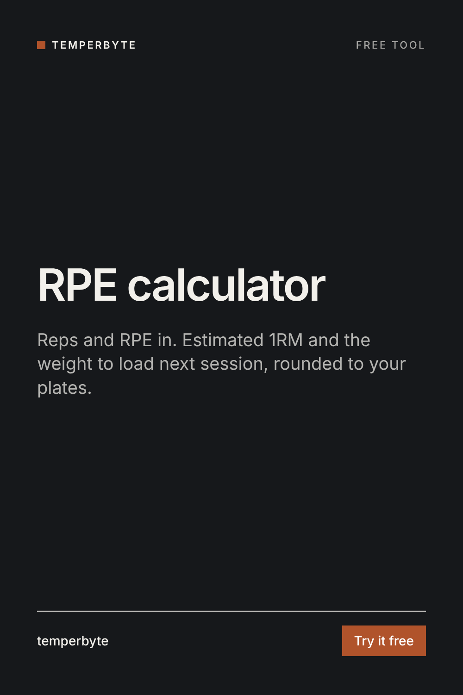

Enter a set your client just did to estimate their max, then pick the reps and RPE for the next session to get the weight to load. RPE 8 means about 2 reps left in the tank.
RPE (rating of perceived exertion) on a 1 to 10 scale describes how hard a set was. In strength training it is usually read as reps in reserve (RIR): RPE 10 is no reps left, RPE 9 is one left, RPE 8 is two left, and half points mean "maybe one more".
The chart is an average. People who are newer to lifting tend to misjudge RPE, and some lifters can do more reps at a given percent than others. Use the number for the first set, then let the RPE of that set adjust the rest. Charts like this are least accurate for sets above about 10 reps.
A training aid, not medical advice. Pain, dizziness or form breaking down are reasons to stop the set, not to hit a number.
Step-by-step guide with a worked example: RPE and RIR explained.
Planning the next block? The Program Progression skill for Claude reads a client's training log, works out what progressed and what stalled lift by lift, and writes the next 4-week block with loads, reps and RPE targets and the reason for each change.
See Program ProgressionOr try the free progressive overload calculator and training volume calculator.
